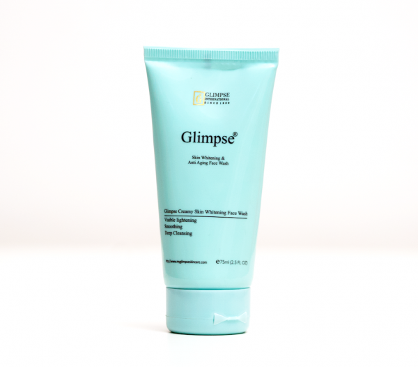

Face Washes
Core Ingredients Used in Face Wash
- Cleansing agents: These are surfactants that help to break down and remove dirt and oil from the skin. Common cleansing agents include sulphate (like SLS, SLES).
- Surfactants: These substances reduce the surface tension of water, allowing it to more easily mix with oil and dirt.
-
Other ingredients: These ingredients may be added
to face washes to provide additional benefits or brighten the
skin. Common other ingredients include glycerine, hyaluronic acid,
salicylic acid, and vitamin C.


Salicylic Acid
Ascorbic Acid
Properties of Various Chemicals Used in Face Wash
- Cleansing agents: Cleansing agents are typically surfactants that have a hydrophilic (water-loving) head and a hydrophobic (oil-loving) tail. This allows them to break down and remove oil and dirt from the skin.
- Surfactants: Surfactants are similar to cleansing agents in that they have a hydrophilic head and a hydrophobic tail. However, surfactants are typically used at lower concentrations than cleansing agents.
Composition of Chemicals Used in Face Wash
- Water: Water is the main ingredient in most face washes.
- Cleansing agents: Cleansing agents are typically used at a concentration of 1-5%.
- Surfactants: Surfactants are typically used at a concentration of 0.5-2%.
- Other ingredients: Other ingredients are typically used at a concentration of 0.1-5%.
Product Stability
The stability of a face wash product can be affected by several factors, including the ingredients used, the manufacturing process, and the storage conditions. It is important to store face wash products in a cool, dry place away from direct sunlight.
Chemicals Which Are Good for the Skin Present in Face Wash
- Glycerine: Glycerine is a humectant that helps to attract and retain moisture in the skin.
- Hyaluronic acid: Hyaluronic acid helps to hydrate the skin.
- Salicylic acid: Salicylic acid is a beta hydroxy acid that helps to exfoliate the skin and unclog pores.
- Vitamin C: Vitamin C is an antioxidant that helps to protect the skin from damage caused by free radicals.
Chemicals Which Are Hazardous to Our Skin Present in Face Wash
- Sodium lauryl sulphate (SLS): SLS is a surfactant that can strip the skin of its natural oils, leading to dryness and irritation.
- Fragrance: Fragrance can be irritating to the skin and may cause allergic reactions.
- Parabens: Parabens are preservatives that have been linked to hormone disruption and cancer.
Consumer Safety
If you have sensitive skin, it is best to choose a face wash that is fragrance-free and contains gentle ingredients. It is also important to patch test new face wash products before using them all over your face.